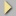

bottom of page
bottom of page
| Neural net classes | bottom of page |
Net type specific components  |
| jump directly to |
Note that these classes are only used by the neural net classes in the structure.
This means, you don't have to worry about instantiation and things like that, for it's all handled by other classes.
| public class Neuron | |
| extends |
java.lang.Object |
| instantiated by |
NeuronLayer
|
| constructors |
public Neuron ()
|
| methods |
void activateSigmoid ()Performs a sigmoid activation on a neuron's input and computes its output.
|
 top of page top of page |
| public class NeuronLayer | |
| extends |
java.lang.Object |
| instantiated by |
BackpropagationNet
KohonenFeatureMap
|
| constructors |
public NeuronLayer ( int size )
Creates a neuron layer with size neurons.
|
| methods |
void computeLayerError ( Pattern pattern )Computes the output error values of all neurons in a layer by comparing the output with a target pattern.
|
| top of page |
| public class WeightMatrix | |
| extends |
java.lang.Object |
| instantiated by |
BackpropagationNet
KohonenFeatureMap
|
| constructors |
public WeightMatrix ( int xSize, int ySize, boolean withBias )
Creates a weight matrix with xSize*ySize weights.
The withBias flag indicates, whether Bias values shall be used or not.
|
| methods |
void changeWeights ( float[] precLayer, float[] succLayer, double learningRate )Changes all weights using the Backpropagation learning algorithm. Only used by BackpropagationNet.
|
| Neural net classes | top of page |
Net type specific components |
| navigation |
|
[main page]
[content]
[neural net overview] [class structure] [using the classes] [sample applet] [glossary] [literature] [about the author] [what do you think ?] |